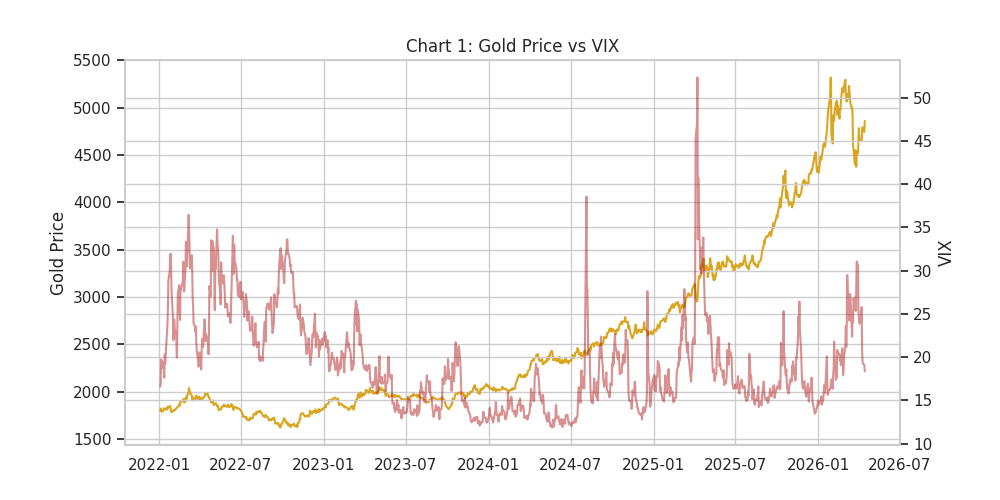
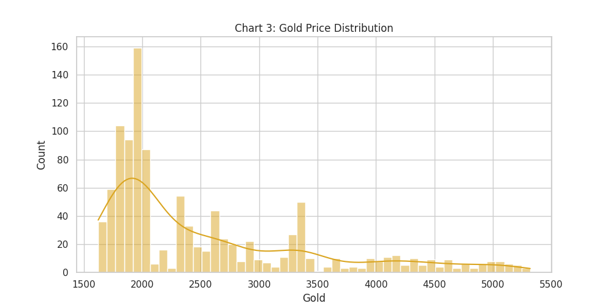
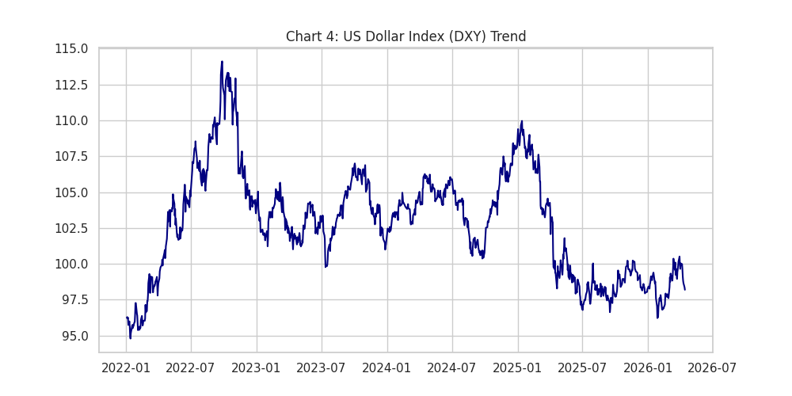
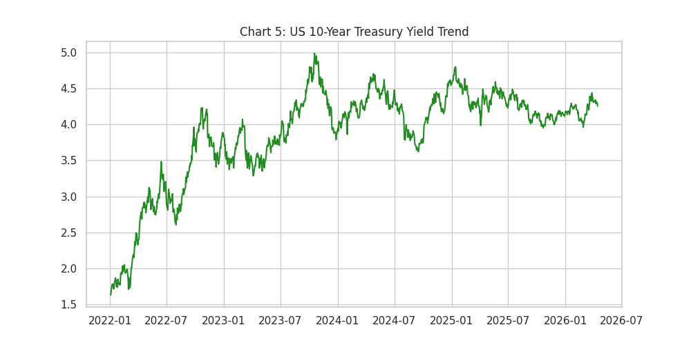
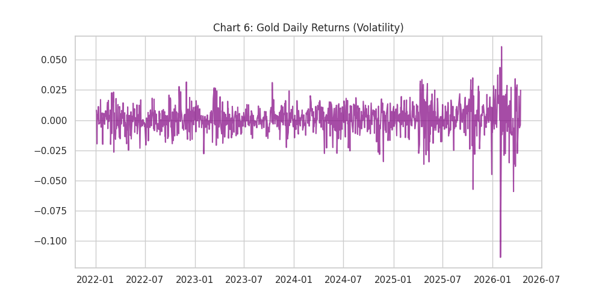
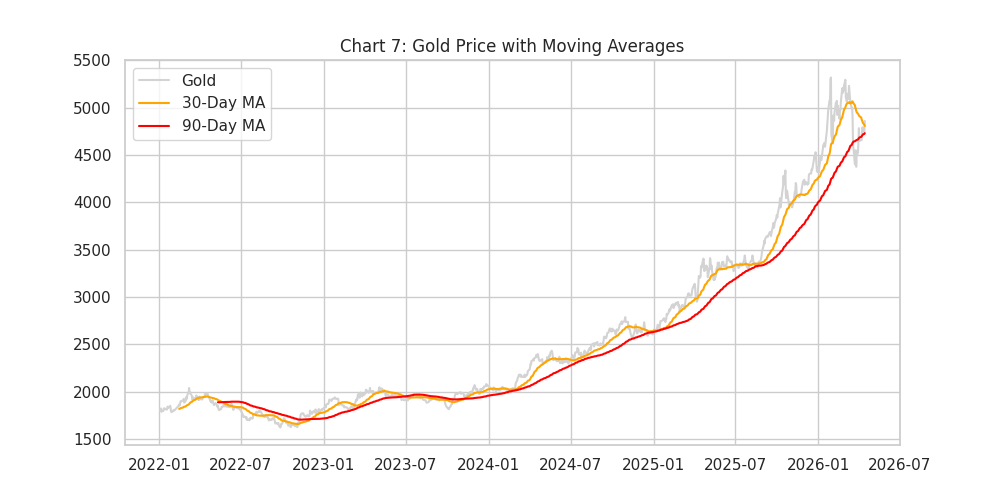
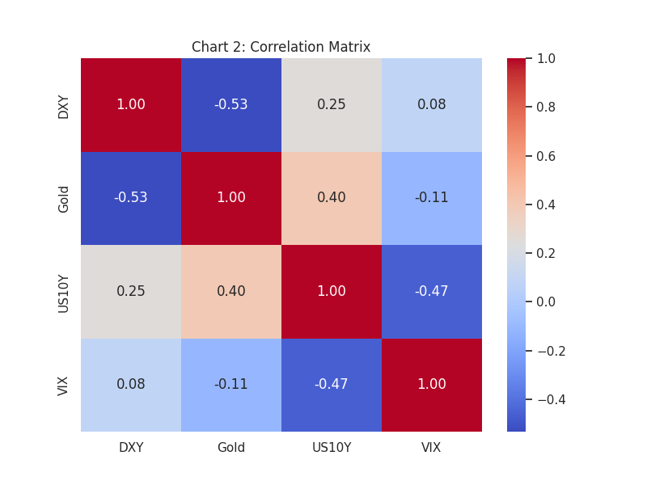
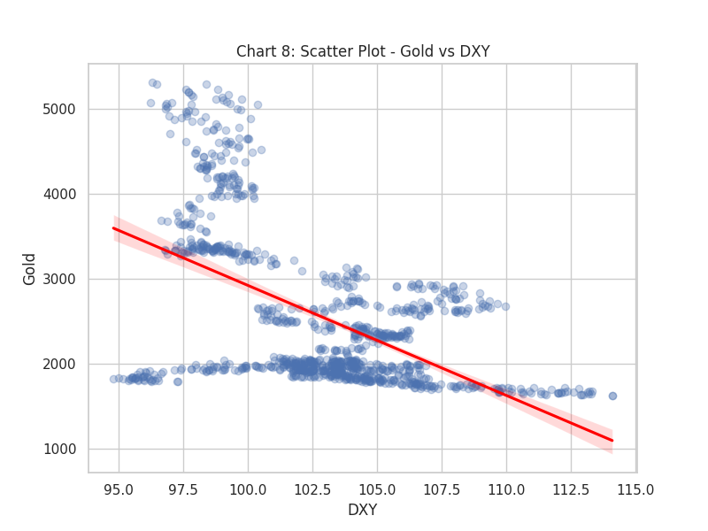
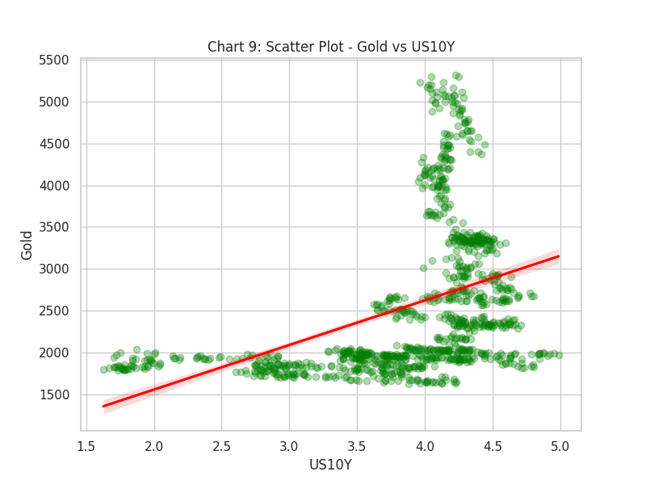
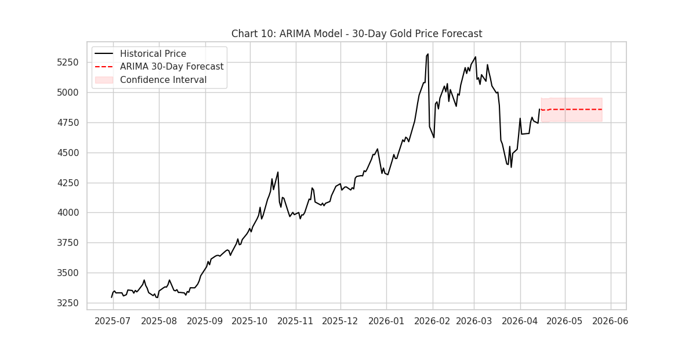

本研究旨在探討中東地區，特別是美國、以色列與伊朗之間的地緣政治衝突，對國際黃金價格走勢的具體影響。黃金長期以來被視為全球金融市場的終極避險資產，其價格波動不僅受到實質供需影響，更與總體經濟指標及國際資金流向緊密相連。本研究建立之假設指出，當武裝衝突或經濟制裁等重大地緣政治風險事件發生時，市場避險情緒的急遽升溫將打破黃金與傳統總經變數間的常規連動，進而驅動金價產生顯著的結構性變化。
為了嚴謹驗證上述假設，本模型之預測目標設定為黃金期貨價格，並納入美元指數、美國十年期公債殖利率以及VIX恐慌指數作為關鍵自變數。以下圖表展示了各項指標的歷史趨勢與分配特徵。透過雙Y軸時間序列圖可以觀察到，在VIX指數飆高的特定風險時期，黃金價格往往呈現正向的避險溢酬反應。此外，美元指數與美債殖利率的趨勢變化，亦反映了國際資本在無風險資產與避險資產間的流動軌跡。






在確認個別變數的時間序列特徵後，本研究進一步執行相關性矩陣與線性迴歸分析。傳統財務理論認為黃金與美元及實質利率存在顯著的負相關性。然而，透過散點圖與線性迴歸趨勢線的擬合檢驗可以發現，在地緣政治風險主導市場的區間內，此負相關結構可能受到雙重避險需求的干擾而產生偏移。這為我們理解極端事件下的金融市場動態提供了量化證據。



為預測未來金價走勢，本專案運用自迴歸整合移動平均模型（ARIMA）進行時間序列預測。本模型考量了歷史價格的自我迴歸特性與隨機誤差項的移動平均效應。下圖展示了利用近期交易數據訓練後，對未來30個交易日的金價預測軌跡與信賴區間。此預測結果綜合反映了當前市場已消化的地緣政治風險溢酬，以及技術面的趨勢慣性，可作為後續投資決策與風險控管的重要量化參考依據。
